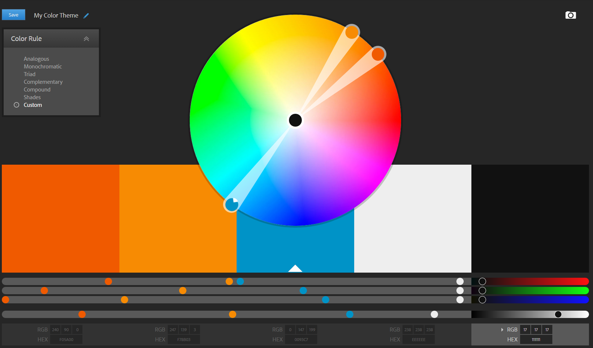

a. Select a region and division use drop down menus.
b. Insert a team name uses a text field.
c. Uploading an icon uses an upload button with an image preview.
d. Searching for a player is done via a text field and a button. The results are displayed beneath the text field in a scrollable table.
e. Viewing a player profile opens a new window displaying the player’s profile.
f. Once a player has accepted your invite, they will be displayed in the selected players table.
g. Once you have accepted an invite they will be displayed in the selected players table.
h. Once submitted, you will be taken to a confirmation page.
The colour scheme I chose was analogous orange with some use of complementary blue.
The oranges were used for structural elements such as the menu bar, tables and buttons.
Blue (#0093C7) was used to highlight important elements such as confirm buttons, highlighting your current page and highlighting team and player attributes.
I used a light grey (#EEE) for the background of all my pages as it kept a good contrast between the text (#111) and objects. It is also easier to look at rather than a pure white.
Hairlines are used mainly for grouping or indicating different functions such as separating static information from dynamic information on the player selection page.
Borders are used to indicate structured groupings of objects such as around the tables on the player selection page.
White space/textured background on the far left and right is used to focus the user on the main task which is at the centre of the screen.
Grouping of objects with proximity is used a lot in my design such as with the team creation form, where all the fields are listed in close proximity.
Some more specific examples of grouping:
Verdana coloured black or blue:
Trebuchet MS coloured white or black
Lucida Sans Unicode in uppercase and coloured white:
For this prototype, the user is expected to finish the team creation and player selection in one session. In the final website there will options to save player selection status (save and quit) and come back to the webpage whenever they need to.
After creating a team, players can request to join your team. In the real website, the creator of them team will not retrieve requests immediately after their team. To show the functionality of this in the prototype, requests are displayed after immediately creating a team.
In the prototype, the search function displays the same results despite what is contained in the search field. In the final website, this search function will sort results by name and position. The search function only shows players that have their profile configured for your division and region.
The profile page for every player is the same. In the final website, these profiles will be unique.
When inviting a player in this prototype, they accept the request immediately after being sent. In the final website, the team creator will have to wait for the user to accept the invite.
If an image is uploaded when creating a team, it will be displayed on the player selection page. This has not been fully implemented in this prototype.